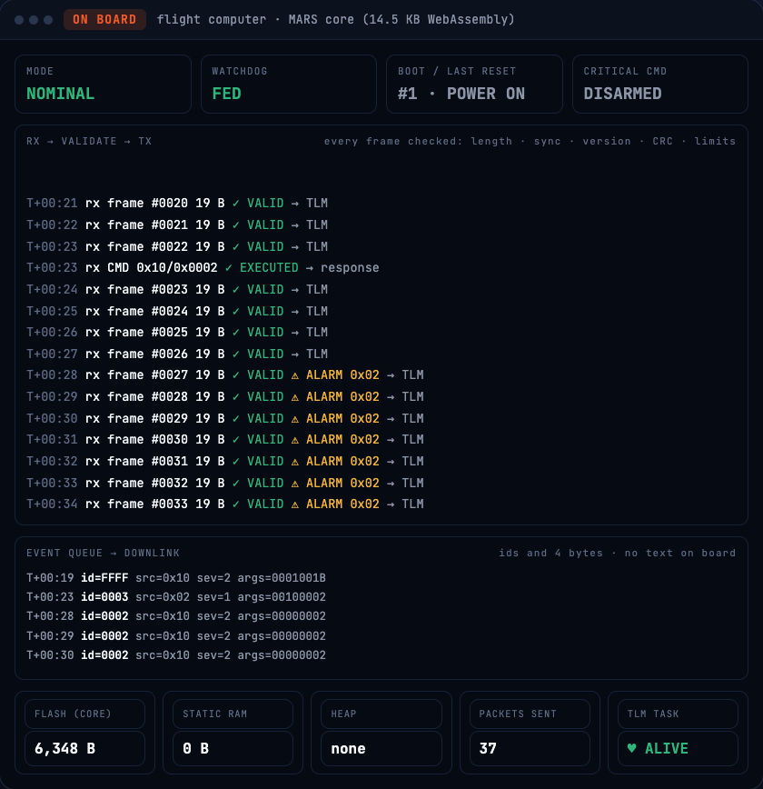
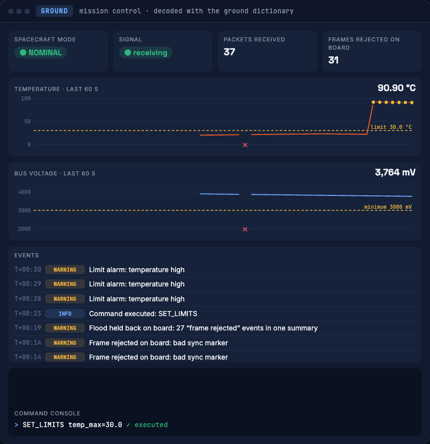
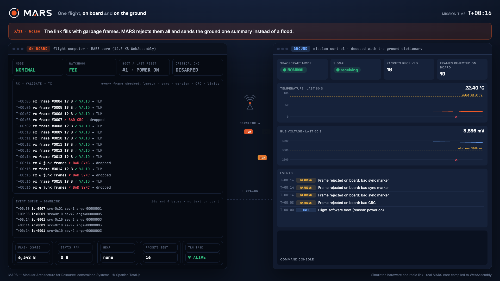
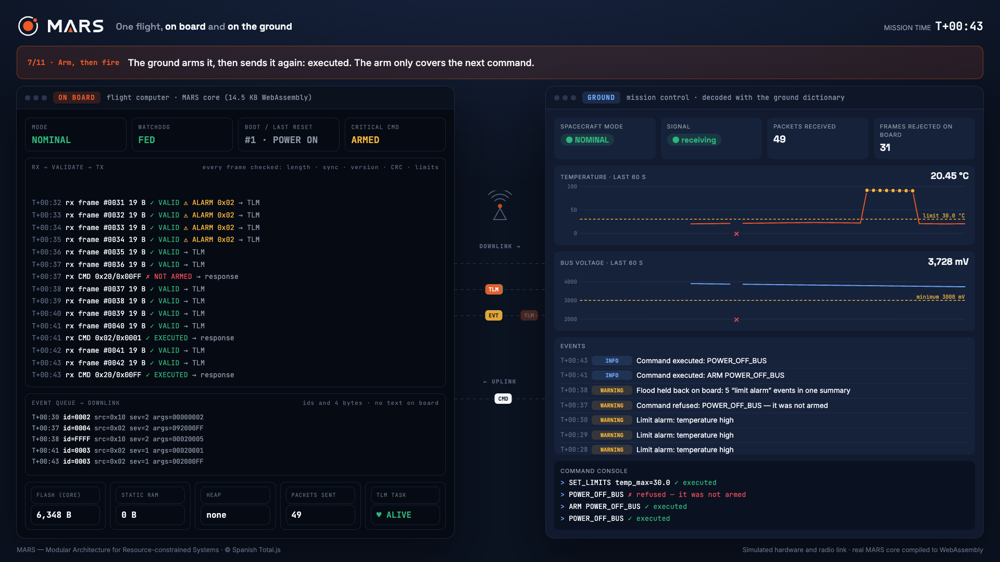
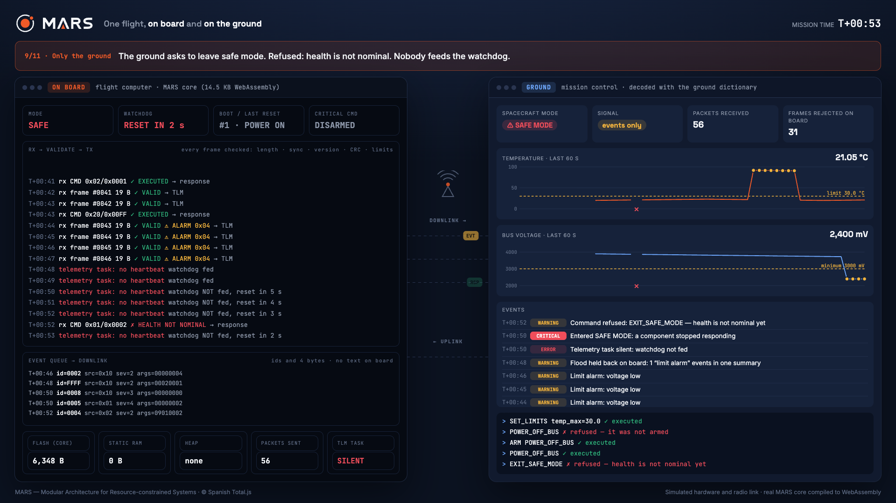
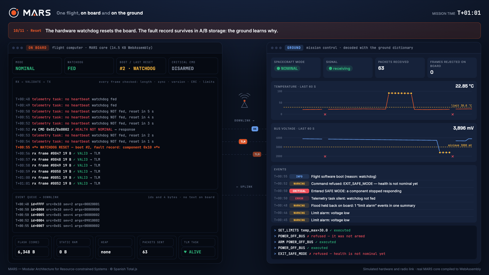

MARS is a small, modular foundation in Rust for satellites and other resource-constrained systems. It validates every frame on board, keeps the spacecraft safe on its own, and plugs into the flight software teams already run, including NASA cFS.
The demo shows the same run twice: what the flight computer does with each frame, and what mission control receives. Nothing reaches the ground without being checked first, and nothing on board needs text to explain itself.

Every frame is checked for length, sync, version, CRC and limits before anything is sent down. Events leave as ids and four bytes: no strings, no heap.

The ground decodes the same ids with its dictionary, plots only data MARS accepted, and sees every command answered with a reason.




NASA's two open flight-software frameworks, cFS and F´, grew independently towards almost the same core services. MARS keeps that common minimum, in Rust, with fixed memory and no hidden activity.
Explicit init, reset and fault states. Nothing starts or runs by itself.
Typed actions and byte processors on caller-owned buffers, wired at compile time.
Monotonic time from the platform, mission time corrected from the ground.
Ids, severity and four bytes in a fixed log. Floods are rate-limited and summarised.
CRC-checked frames, a required authorisation policy, an answer with a reason for every command, and two-step arm-and-fire for critical ones.
Stage, validate, commit. A bad upload can never become active.
Heartbeats with deadlines. The watchdog is fed only while every component is alive.
One CRC-protected envelope for everything sent to the ground: one stream, one decoder.
Every item kept in two copies with generation and CRC. Power can fail mid-write.
Boot count, reset reason and last fatal error, kept across resets.
Entered automatically on silence, fatal errors or repeated resets; left only by ground command.
The first module: frame validation, limits and alarms, records, sequence-gap tracking and housekeeping.
| Service | cFS | F´ | MARS |
|---|---|---|---|
| Lifecycle | Executive Services | Components, topology | Explicit init / reset / faulted |
| Messaging | Software Bus | Typed ports | Compile-time wiring, caller-owned buffers |
| Time | Time Services | Time | Monotonic clock + mission-time correlation |
| Events | Event Services, binary filters | Event manager, throttling | Fixed log, rate limits, summaries |
| Commands | Commands over the bus | Command dispatcher | Authorised dispatch, reasons, arm-and-fire |
| Parameters | Table Services | Parameter database | Stage → validate → commit |
| Health | Health & Safety app | Health (ping) | Deadlines and the watchdog decision |
| Persistence | Critical Data Store | Files | A/B copies with generation and CRC |
Size measured on thumbv7em-none-eabihf (Cortex-M4F / M7), rustc 1.100.0, optimised for size with LTO, against an empty firmware image. Reproducible with one script.
| What | Flash | Static RAM | Notes |
|---|---|---|---|
| Telemetry pipeline with an 8-record queue | 1,969 B | 0 B | Frame validation, limits, records, counters |
| Whole core + telemetry | 6,348 B | 0 B | Events, health, commands, parameters, packets, A/B storage, faults, safe mode |
| Telemetry used from a C firmware | 2,917 B | 136 B | Through the C interface; the 136 B are the object the firmware declares |
The MARS app builds against NASA cFS v7.0.1 like any other application: it validates raw frames on the software bus, publishes only valid records, reports through cFS Event Services and takes ground commands. An automated test boots cFS, sends commands over UDP and checks what cFS reports.
| The test sends | cFS reports |
|---|---|
| A frame with one flipped bit | MARS: frame rejected: checksum mismatch |
| New limits from the ground | MARS: limits set, temperature max 20.00 degC |
| The same good frame again | MARS: limit alarm 0x02 on seq 258: 21.50 degC, 3700 mV, -250 mA |
| Inconsistent limits | MARS: limits refused: invalid argument |
| 12 garbage frames | only 8 events, thanks to the cFS binary filter |
| A housekeeping request | hk frames=15 accepted=2 alarms=1 bad_crc=1 … bad_sync=12 |
Nobody replaces years of flight heritage in one go. MARS is built to be dropped next to what already flies.
Validate frames and check limits with MARS, inside your existing app or as the MARS cFS app.
One static library and one header. Fixed-size objects, status codes everywhere, no allocation.
Events, health, safe mode, commands with arm-and-fire, persistent storage: each one on its own.
New components written directly on MARS Core, with the compiler checking what C cannot.
MARS is in early development. It is not flight-qualified or certified, and it does not claim to be: that takes mission-specific engineering, verification and review.
MARS is proprietary software by Spanish Total.js. Clients receive the source code of the core and the modules they license, to use, audit and adapt inside their own products. This website and repository present the product; they contain no source code.